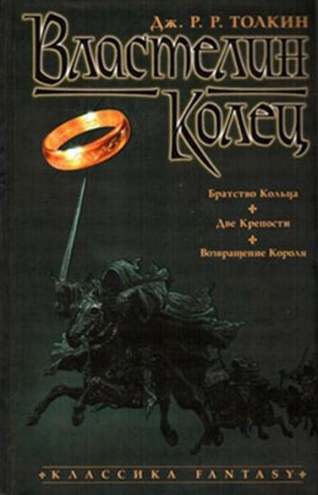

Властелин Колец
{kind=link}
Характеристики товара(Табличный вариант)
| Формат издания | 130×200 мм (средний формат) |
| Количество страниц | 1104 |
| Год выпуска | 2007 |
| ISBN | 978-5-91181-459-5, 5-352-00352-3 |
| Тираж | 7000 |
| Издательство | Азбука-классика |
| Серия | Классика Fantasy |
| Переводчик | Владимир Грушецкий |
| Переплет | Твердый переплет |
| Язык издания | Русский |
| Тип издания | Отдельное издание |
| Вес в упаковке, г | 960 |
Описание товара
Трилогия «Властелин Колец» бесспорно возглавляет список «культовых» книг XX века. Ее автор Дж.Р.Р.Толкин, профессор
Оксфордского университета, специалист по древнему и средневековому английскому языку, создал удивительный мир -
Среднеземье, который вот уже без малого пятьдесят лет неодолимо влечет к себе миллионы читателей.
Там, в Среднеземье, в стране, управляемой советом волшебников, где в серебряных лесах поют эльфы, в глубоких пещерах
добывают драгоценный мифрил гномы, а бескорыстие добрых чародеев постоянно подвергается испытаниям, — разгорается
битва Света и Тьмы, исход которой, по воле провидения, зависит от самых маленьких жителей — Хоббитов.